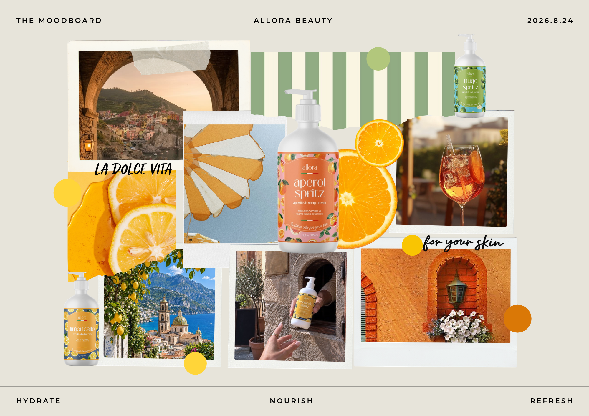
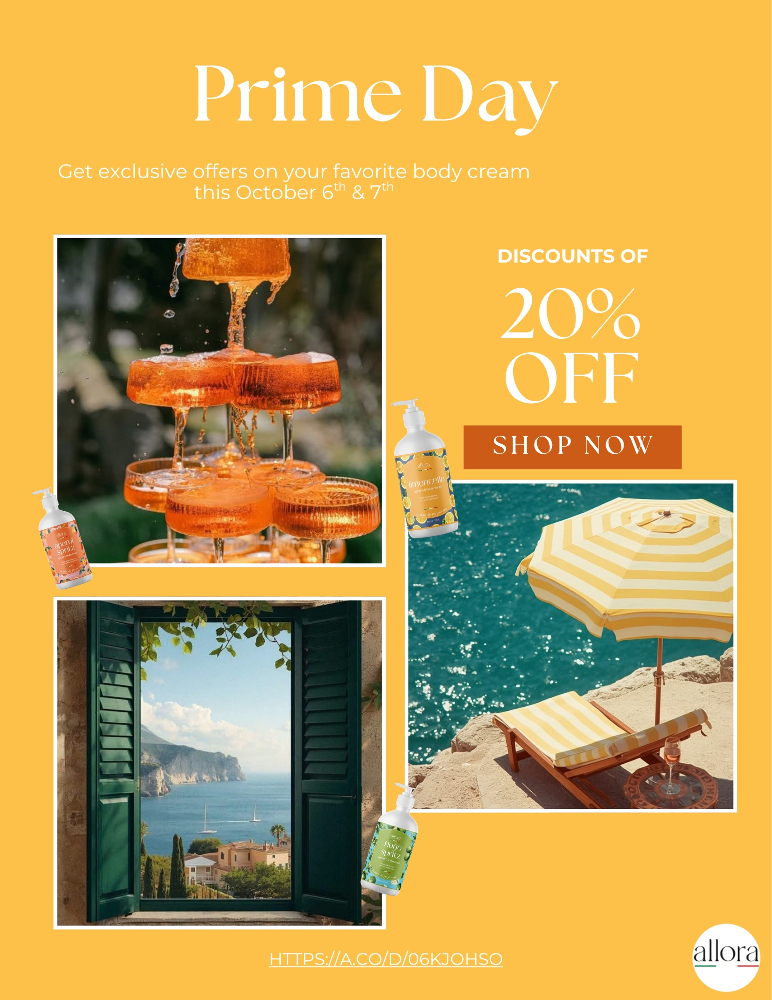
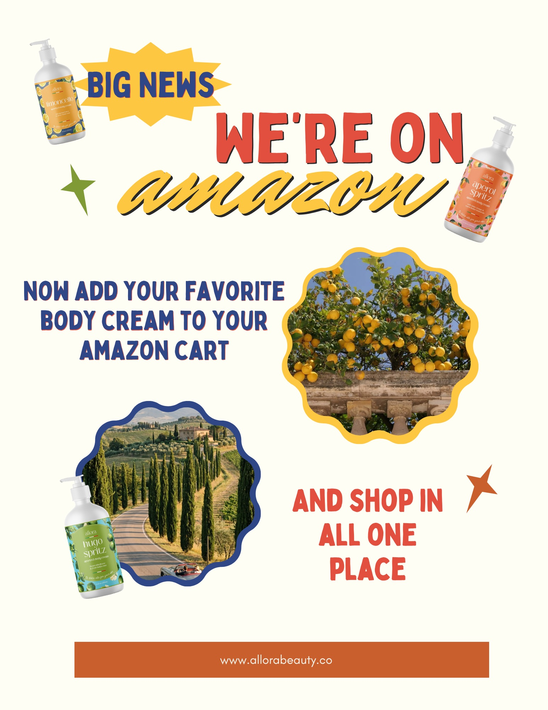
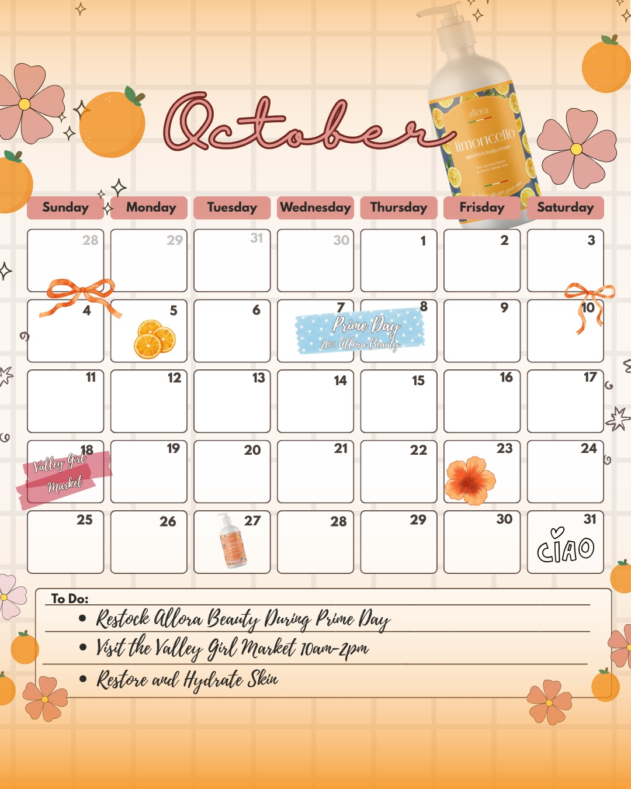
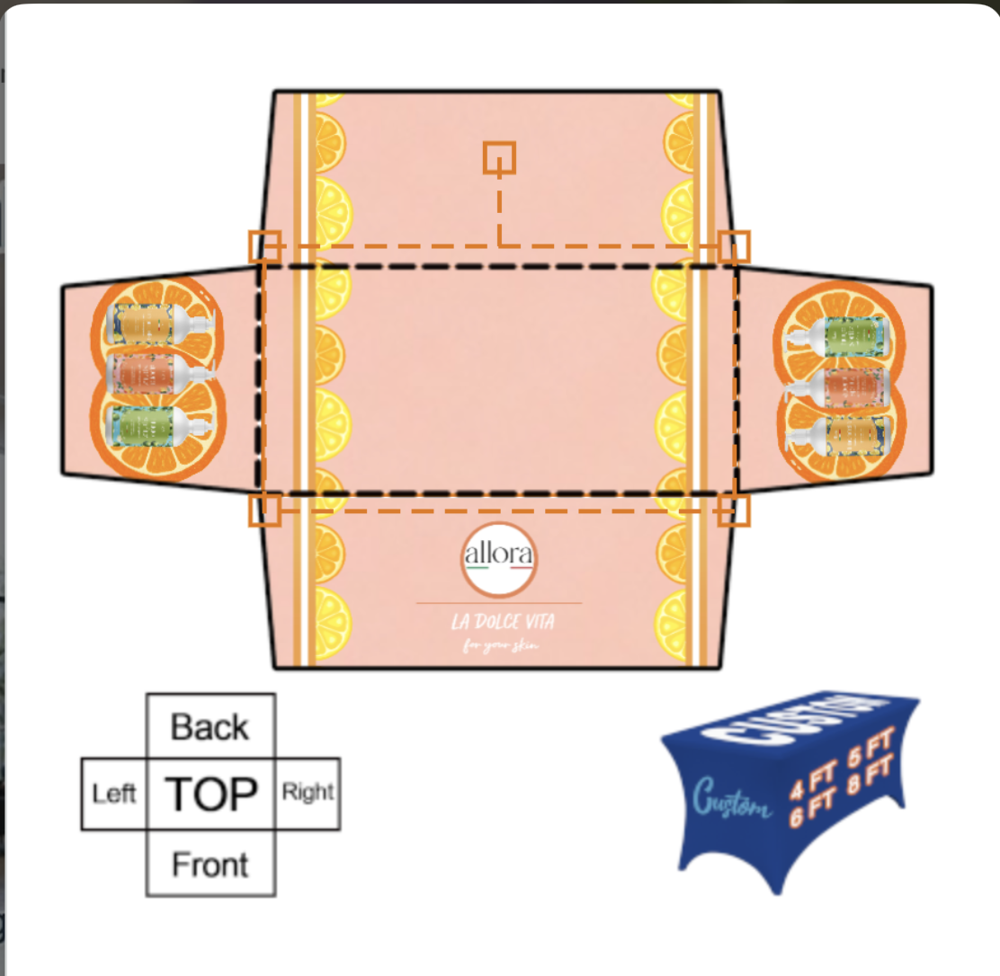
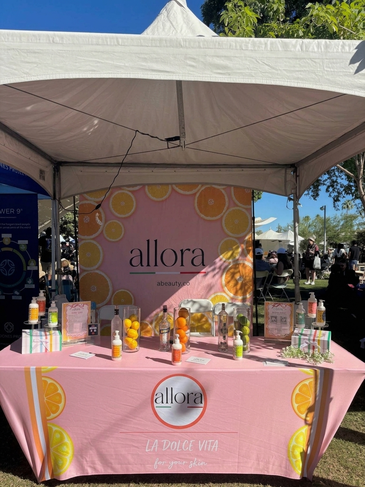
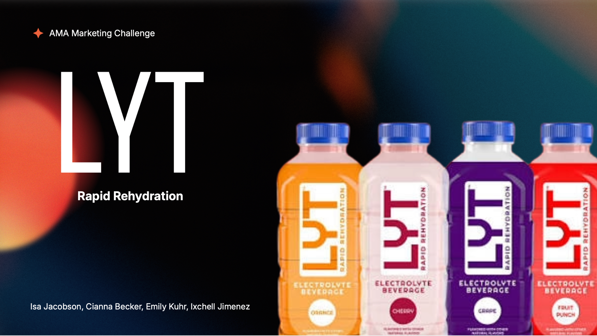
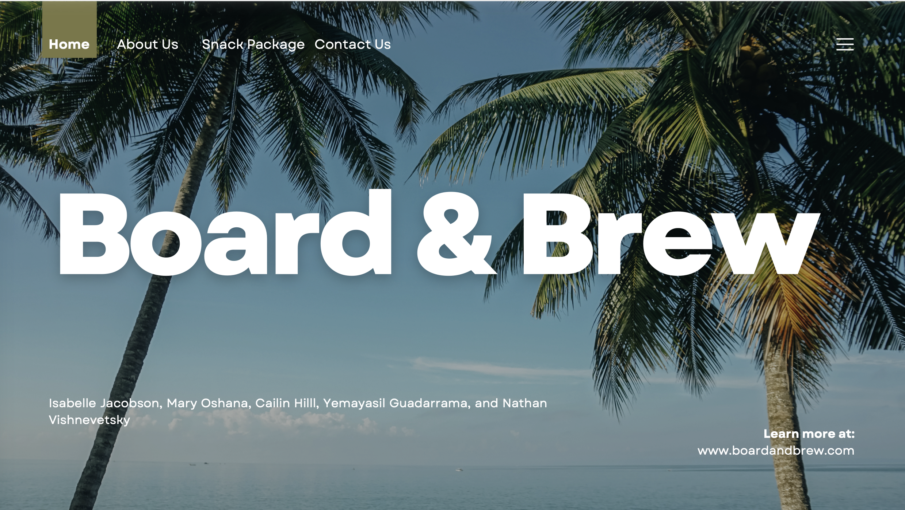
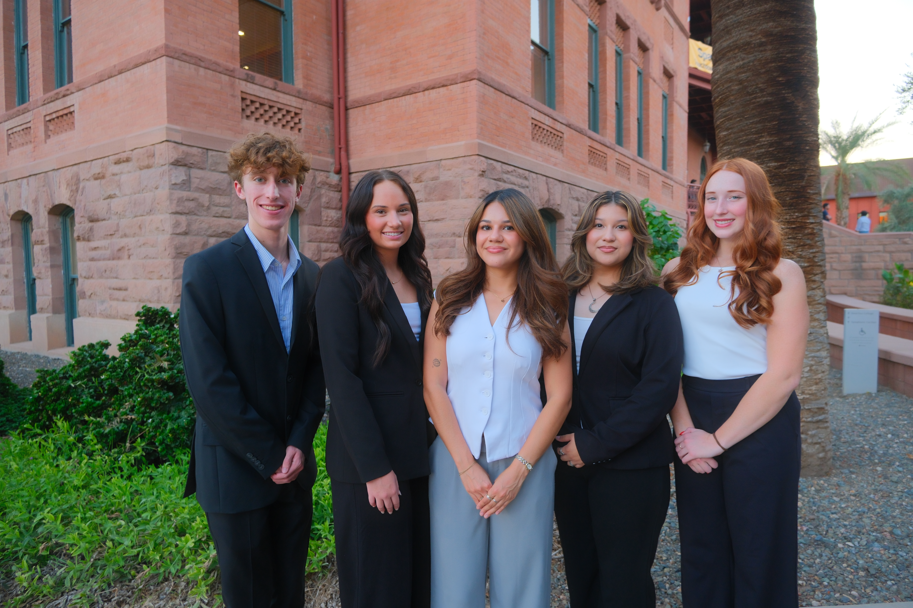

Brand Moodboard
Brand Identity & Visual Direction
A visual moodboard created to establish a cohesive direction for Allora Beauty's Italian-inspired branding, colors, imagery, and product presentation.
Marketing Portfolio
A collection of professional, academic, and creative work that highlights my experience with branding, social media, content creation, marketing strategy, and visual communication.
Professional Work
Through my work with Allora Beauty, I have created branded graphics, promotional materials, social media content, and visual concepts designed to maintain a cohesive brand identity across digital and in-person marketing.

Brand Identity & Visual Direction
A visual moodboard created to establish a cohesive direction for Allora Beauty's Italian-inspired branding, colors, imagery, and product presentation.


Social Media & Digital Marketing
Branded promotional graphics created to communicate timely announcements and offers while maintaining Allora Beauty's recognizable visual identity.

Social Media Planning
A branded monthly content calendar designed to organize promotions, events, and social media opportunities while maintaining a consistent visual identity.


Graphic Design & Event Marketing
A physical table banner I designed for an Allora Beauty promotional event. The digital design was produced and used as part of the brand's real-world event display, allowing me to see my work move from concept to implementation.
Content Creation
This collection combines professional and personal short-form content to showcase my experience with editing, pacing, trends, music, and visual storytelling. While some of the personal pieces are more playful, they demonstrate the creative foundation I can build on when given the opportunity to create content for a brand or larger campaign.
Professional Work • Brand Content
Short-form content created for Allora Beauty, giving me experience applying editing and visual storytelling skills within an established brand identity.
Individual Work • Short-Form Editing
A social media edit featuring ASU Stunt Devils content, created to showcase team energy through short-form video, music, pacing, and visual transitions.
Individual Work • Short-Form Editing
A creative short-form edit demonstrating my experience selecting clips, editing to audio, timing visual changes, and developing engaging content designed for social media.
Collaborative Work
Marketing strategy workshops completed collaboratively through the American Marketing Association at ASU. These experiences gave me opportunities to work with other students to develop ideas and recommendations for real brands and their target audiences.

AMA Workshop • Group Work
Collaborated on ideas for experiential activations, campus placement, social content, and partnerships designed to increase brand awareness among ASU students.

AMA Workshop • Group Work
Collaborated on student-focused marketing ideas including sampling, campus partnerships, athlete collaborations, promotions, and social media engagement.

AMA Workshop • Group Work
Contributed to marketing concepts focused on social media, campus tabling, student promotions, and limited-menu strategies.


Committee Involvement • Individual Content Creation
The Revibe Wellness Workshop graphic is an example of content I personally created as part of my role on the AMA Social Media Committee. I used event photography and visual design to highlight the workshop while creating content that could be shared with AMA's student audience.
Academic Work
Selected academic projects demonstrating my experience with marketing strategy, business analysis, visual communication, and collaborative problem solving.

Group Project • Marketing
A collaborative brand-extension project proposing YETI SoundGlow, an outdoor lantern with a built-in speaker. My primary contribution focused on promotion and place strategy, including the launch campaign, social media rollout, and distribution approach.

Individual Project • Infographic
An individual visual communication project exploring how financial tools can support environmentally responsible business practices and sustainable development while presenting the information in a clear, engaging format.

Group Project • Business Strategy
A collaborative analysis exploring how changes in technology and consumer behavior affect Macy's and the strategies the company can use to adapt and remain competitive in a changing retail environment.